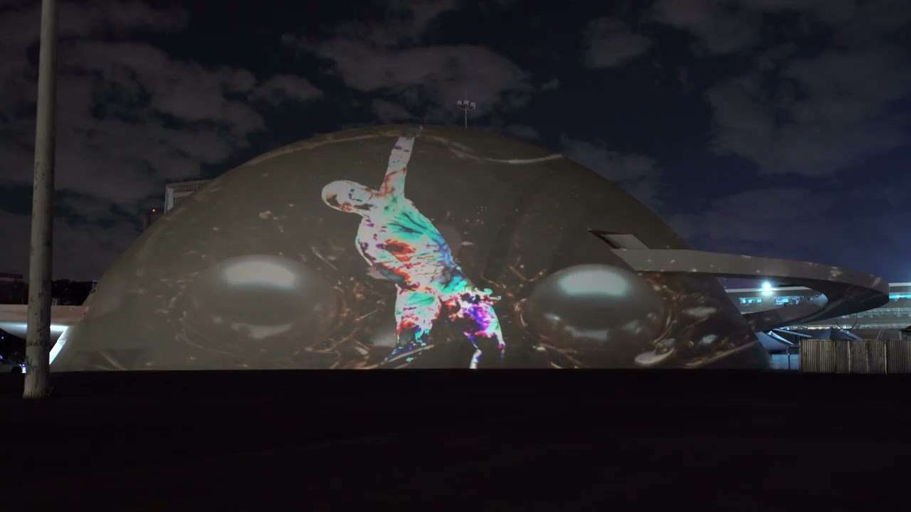
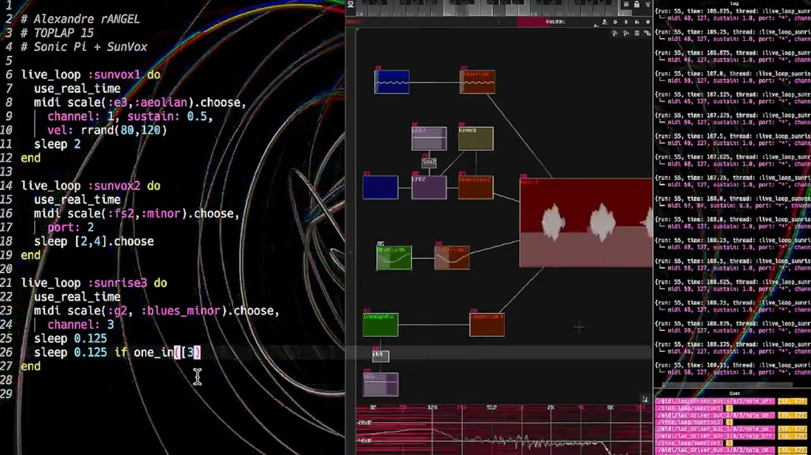
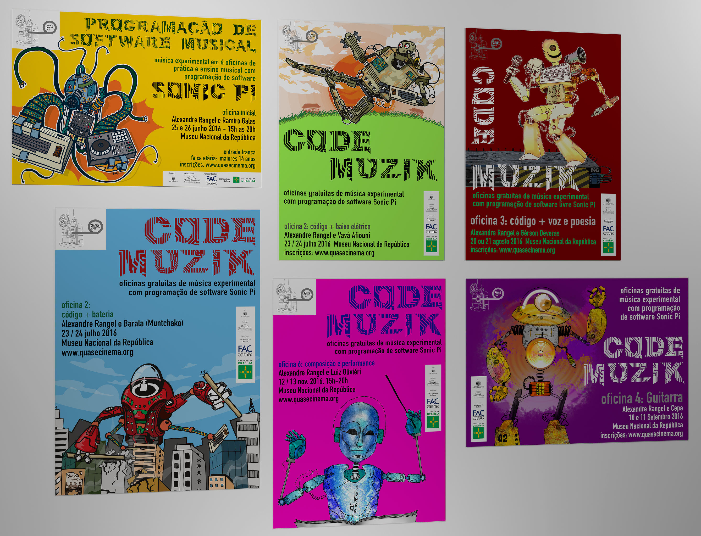
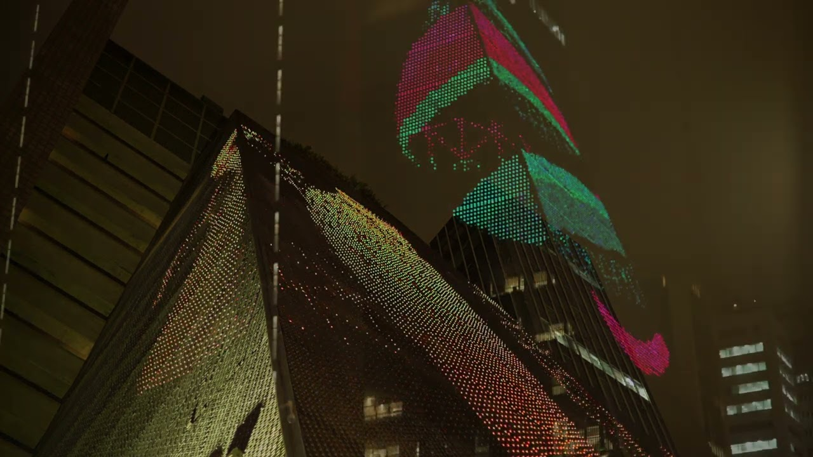
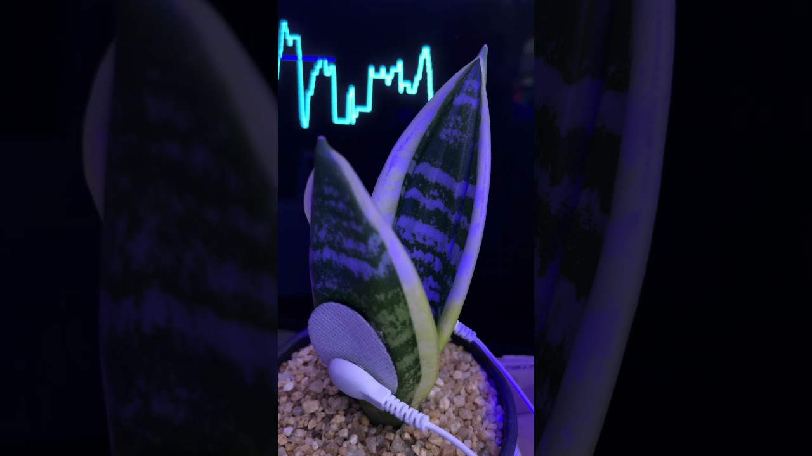
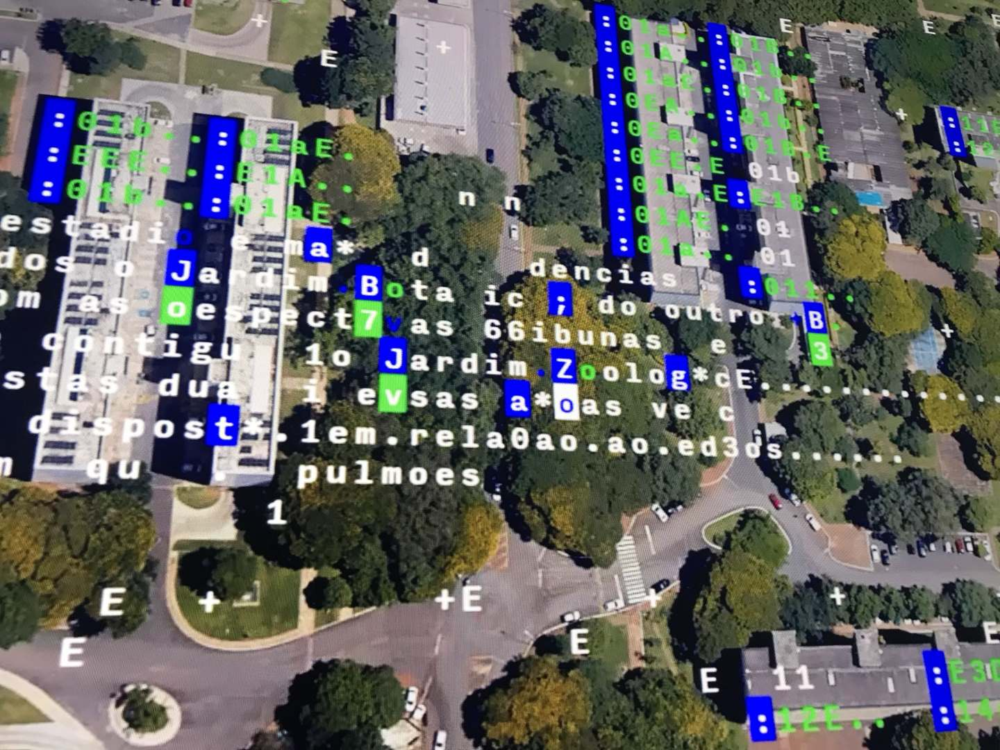
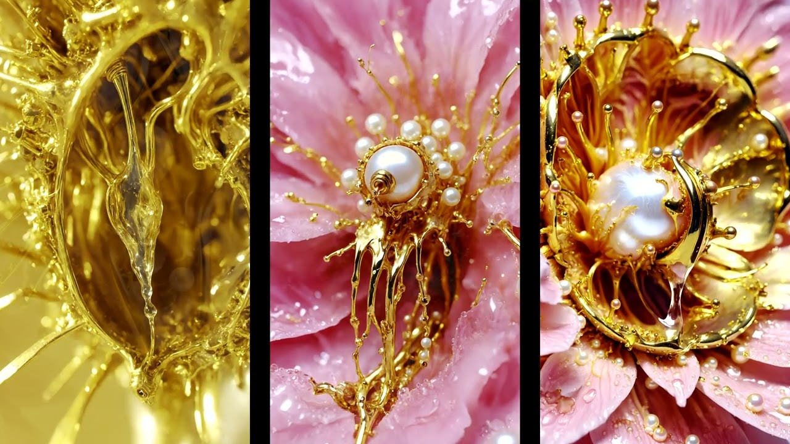
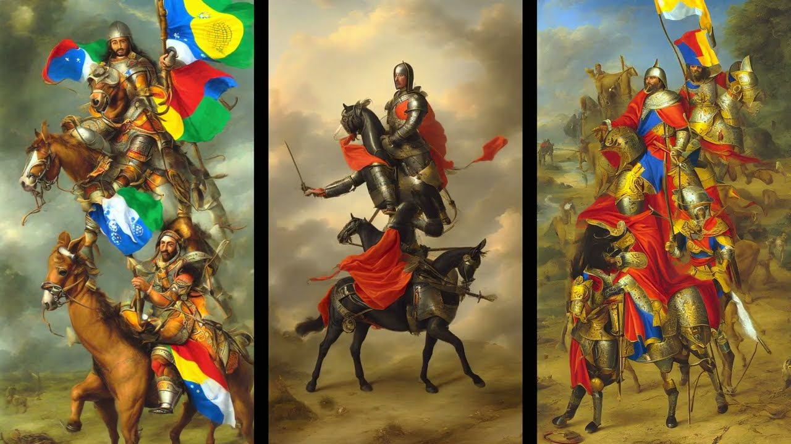
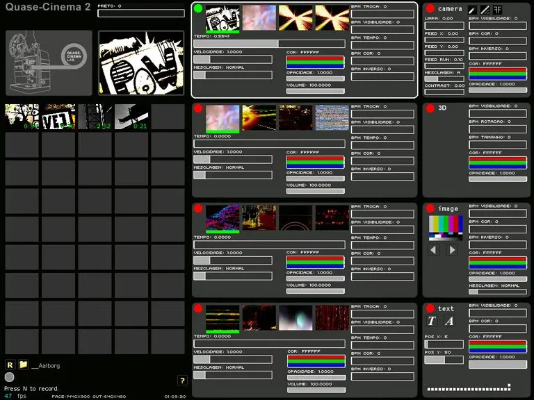

Metodologia e Tecnologias
Methodology and Technologies
Alexandre Rangel, Doutor em Arte e Tecnologia (UnB, 2019)PhD in Art and Technology (UnB, 2019)


Metodologia e Tecnologias
Alexandre Rangel é artista multimídia, pesquisador e desenvolvedor de software brasiliense, Doutor em Arte e Tecnologia (UnB, 2019). Seu método começa pela subversão da função original do software: programas são desviados daquilo para que foram feitos e conectados de maneiras inesperadas, de modo que uma imagem analisada em Processing toca o ORCA, o sinal elétrico de uma planta conduz o Ableton Live e o código escrito ao vivo em Sonic Pi, Strudel ou Hydra divide a cena com o Blender e com aplicativos que ele mesmo programa. A produção artística é o centro dessa prática: as Esculturas Quânticas interativas na fachada de LED da Fiesp, em São Paulo; os corpos e as projeções organicamente mapeadas do coletivo Earth Affection no Museu Nacional da República; as plantas que compõem música em eco-sistemas; e a pesquisa com inteligência artificial em obras como Sopa Primordial, exibida nos CCBBs do Rio de Janeiro e de São Paulo. Desde os anos 1990, e de forma contínua desde o início dos anos 2000, Alexandre também desenvolve software criativo para a própria expressão e para a de outras pessoas, sobretudo o Quase-Cinema, software livre de cinema ao vivo levado a oficinas no Brasil, na Dinamarca e em Taiwan.
Técnica: Software livre e de código aberto (Blender, Sonic Pi, Strudel, Hydra, ORCA, Processing, Cables.gl), Ableton Live, softwares próprios de performance audiovisual, inteligência artificial sob autoria humana, projeção mapeada.
Methodology and Technologies
Alexandre Rangel is a multimedia artist, researcher and software developer from Brasília, with a PhD in Art and Technology (UnB, 2019). His method starts by subverting the original function of software: programs are taken away from what they were made for and connected in unexpected ways, so that an image analysed in Processing plays ORCA, the electrical signal of a plant drives Ableton Live, and code written live in Sonic Pi, Strudel or Hydra shares the stage with Blender and with applications he writes himself. Artistic production is the core of this practice: the interactive Quantum Sculptures on the LED façade of Fiesp in São Paulo; the bodies and organically mapped projections of the Earth Affection collective at the National Museum of the Republic; the plants that compose music in eco-systems; and his research with artificial intelligence in works such as Primordial Soup, shown at CCBB Rio de Janeiro and São Paulo. Since the 1990s, and steadily since the early 2000s, he has also developed creative software for his own expression and for other people's, above all Quase-Cinema, free software for live cinema taken to workshops in Brazil, Denmark and Taiwan.
Medium & tools: Free and open-source software (Blender, Sonic Pi, Strudel, Hydra, ORCA, Processing, Cables.gl), Ableton Live, his own audiovisual performance software, artificial intelligence under human authorship, projection mapping.

Percurso acadêmico e pesquisa
Pesquisa e arte cresceram juntas na Universidade de Brasília: o bacharelado em Artes Plásticas (2007) deu origem ao Quase-Cinema, o mestrado em Arte-Educação (2013) o estudou como ferramenta de ensino com software livre (dissertação) e o doutorado (2019) refletiu sobre o artista como desenvolvedor de sistemas computacionais (tese). O ensino corre em paralelo, das oficinas de programação CODE MUZIK, dentro e fora da universidade, aos cursos de Hydra e live coding, numa produção contínua de arte, pesquisa acadêmica e tecnologia audiovisual.
Técnica: Bacharel em Artes Plásticas (UnB, 2007); Mestre em Arte-Educação (UnB, 2013); Doutor em Arte e Tecnologia (UnB, 2019).
Academic path and research
His research and his art grew together at the University of Brasília: the BFA in Visual Arts (2007) gave birth to Quase-Cinema, the master's in Art Education (2013) studied it as a tool for teaching with free software (dissertation), and the doctorate (2019) reflected on the artist as a developer of computational systems (thesis). Teaching runs alongside, from the CODE MUZIK coding workshops, inside and outside the university, to courses on Hydra and live coding, in a continuous production of art, academic research and audiovisual technology.
Medium & tools: BFA in Visual Arts (UnB, 2007); MA in Art Education (UnB, 2013); PhD in Art and Technology (UnB, 2019).

Esculturas Quânticas
Esculturas Quânticas: obra interativa que explora as possibilidades infinitas de interação entre o corpo humano e a matéria escultórica virtual. Os movimentos do público tornam-se entrada e catalisador de transformações contínuas: cada gesto, postura ou presença ativa uma cascata de respostas visuais e sonoras, formando uma escultura viva que só existe no instante da interação. As formas dialogam com a teoria dos campos quânticos, segundo a qual as partículas não ocupam posições fixas, mas emergem como possibilidades moldadas por campos de energia e pela observação. Mais que um objeto, a obra é um campo relacional, sensível e contingente, que aproxima tecnologia e intuição, ciência e sensorialidade.
Técnica: Instalação interativa de imagem e som em tempo real; captura do movimento do corpo; 3D em tempo real em Cables.gl, modelagem em Blender; software próprio; fachada de LED.
Quantum Sculptures (Esculturas Quânticas)
Quantum Sculptures: an interactive work exploring the infinite possibilities of interaction between the human body and virtual sculptural matter. The visitors' movements become both input and catalyst for continuous transformation: each gesture, posture or presence sets off a cascade of visual and sonic responses, forming a living sculpture that exists only in the moment of interaction. The forms are in dialogue with quantum field theory, which holds that particles do not occupy fixed positions but emerge as possibilities shaped by energy fields and by observation. Rather than an object, the work is a relational field, sensitive and contingent, that brings technology and intuition, science and sensoriality closer together.
Medium & tools: Real-time interactive image and sound installation; body movement capture; real-time 3D in Cables.gl, modelling in Blender; custom software; LED façade.

eco-sistemas: interferências eco-lógicas
Na série eco-sistemas, Alexandre Rangel propõe um experimento de comunicação inter-reinos, entre humanos e vegetais. Eletrodos presos às folhas captam os impulsos elétricos galvânicos das plantas, pequenas variações que oscilam com a luz, a umidade e o toque. Um controlador Frequency Wave converte esses sinais em comandos que, por meio de software próprio, Cables.gl e Ableton Live, disparam e modulam música generativa, partículas visuais e palavras: a planta passa a conduzir a performance junto com o artista e o público. Em Plant Lemuria (2022), o toque numa espada-de-são-jorge curva as linhas do sinal; em interferência eco-lógica #1 (2023), a série ocupou a exposição #EMMEIO 15 / XenoPaisagens, no Museu Nacional da República; em sistema poético de interferência bio-eletrônica (2023) e Planta Poema (2025), o sinal vegetal escolhe sons e palavras e compõe, em tempo real, um poema audiovisual compartilhado.
Técnica: Instalação bioeletrônica e performance audiovisual; plantas vivas, eletrodos, controlador Frequency Wave, software próprio, Cables.gl, Ableton Live, projeção e som. Dimensões variáveis.
eco-systems: eco-logical interferences
In the eco-systems series, Alexandre Rangel sets up an experiment in communication between kingdoms, human and vegetal. Electrodes attached to the leaves pick up the plants' galvanic electrical impulses, small variations that shift with light, humidity and touch. A Frequency Wave controller turns these signals into commands that, through his own software, Cables.gl and Ableton Live, trigger and modulate generative music, visual particles and words: the plant comes to steer the performance together with the artist and the audience. In Plant Lemuria (2022), touching a snake plant bends the signal lines; in eco-logical interference #1 (2023), the series was shown in the exhibition #EMMEIO 15 / XenoPaisagens at the National Museum of the Republic; in poetic bio-electronic interference system (2023) and Planta Poema (2025), the plant signal chooses sounds and words, composing in real time a shared audiovisual poem.
Medium & tools: Bio-electronic installation and live audiovisual performance; living plants, electrodes, Frequency Wave controller, custom software, Cables.gl, Ableton Live, projection and sound. Dimensions variable.

Live coding com linguagens exóticas: Tocando Brasília
O live coding atravessa a trajetória de Alexandre Rangel: programar diante do público, com o código projetado, em linguagens exóticas como ORCA, ixi lang e Gibber, ao lado de Sonic Pi, Strudel e Hydra. Tocando Brasília leva essa prática para a escala da cidade. Um jogo? Um instrumento? Ou uma cidade inteligente? O software interativo mistura imagens de satélite e textos do urbanista Lúcio Costa e permite que o público manipule os mapas e toque a cidade como uma partitura, explorando a relação entre os papéis de jogador e cidadão em tempos de vigilância, controle de dados e internet das coisas. A versão original nasceu de uma ecologia de tecnologias, Processing, ORCA, JavaScript, Ableton Live e software próprio, em que a imagem lida em Processing envia mensagens ao ORCA. A versão mais recente foi reconstruída inteiramente em JavaScript, com o objetivo de garantir a preservação digital da obra, e apresentada em RISCO: Brasília, festa de imagem e cidade no Conic, no Setor de Diversões Sul, em 20 de abril de 2026, às vésperas do aniversário de Brasília.
Técnica: Software art interativo; imagens de satélite e textos de Lúcio Costa; versão original: Processing, ORCA, JavaScript, Ableton Live e software próprio; versão atual inteiramente em JavaScript; projeção e som.
Live coding with exotic languages: Playing Brasília
Live coding runs through Alexandre Rangel's whole trajectory: programming in front of the audience, with the code projected, in exotic languages such as ORCA, ixi lang and Gibber, alongside Sonic Pi, Strudel and Hydra. Playing Brasília takes this practice to the scale of the city. A game? An instrument? Or a smart city? The interactive software mixes satellite images with texts by the urban planner Lúcio Costa and lets the audience manipulate the maps and play the city like a score, exploring the relationship between the roles of player and citizen in times of surveillance, data control and the internet of things. The original version grew out of an ecology of technologies, Processing, ORCA, JavaScript, Ableton Live and custom software, in which the image read in Processing sends messages to ORCA. The latest version was rebuilt entirely in JavaScript to ensure the work's digital preservation, and shown at RISCO: Brasília, a night of image and city at Conic, in the Setor de Diversões Sul, on 20 April 2026, on the eve of Brasília's anniversary.
Medium & tools: Interactive software art; satellite images and texts by Lúcio Costa; original version: Processing, ORCA, JavaScript, Ableton Live and custom software; current version entirely in JavaScript; projection and sound.

Earth Affection
Earth Affection é o coletivo de Alexandre Rangel, Joana Mostafa e Will Lopes. Suas obras partem do corpo humano, do movimento e da energia para pensar o transumanismo e a sensualidade: dança, som e imagem se encontram em projeções de vídeo mapeadas organicamente sobre corpos, superfícies e arquiteturas. Em light affection, o corpo é superfície de acontecimentos sonoros e luminosos; em Sonhos Molhados de Gaia, modelos de inteligência artificial rodando localmente, fora das redes, geram com a artista matérias orgânicas e metálicas que dissolvem as fantasias de um corpo puramente humano. O tríptico foi projetado na cúpula do Museu Nacional da República, no Festival Eixo do Fora; na Virada Cultural do Sesc-DF, em agosto de 2026, o coletivo apresentou Irmandades de Gaia.
Técnica: Videomapping, dança e som; projeção de vídeo mapeada sobre corpos e arquitetura; live coding; modelos generativos de IA executados localmente; tríptico de vídeo 4K (2h).
Earth Affection
Earth Affection is the collective of Alexandre Rangel, Joana Mostafa and Will Lopes. Its works start from the human body, movement and energy to think about transhumanism and sensuality: dance, sound and image meet in video projections mapped organically onto bodies, surfaces and architecture. In light affection, the body is a surface for sound and light events; in Gaia Wet Dreams, artificial intelligence models running locally, off the networks, generate with the artist organic and metallic matter that dissolves the fantasy of a purely human body. The triptych was projected on the dome of the National Museum of the Republic at the Eixo do Fora Festival; at the Sesc-DF Virada Cultural, in August 2026, the collective presented Irmandades de Gaia (Gaia Sisterhoods).
Medium & tools: Video mapping, dance and sound; video projection mapped onto bodies and architecture; live coding; generative AI models run locally; 4K video triptych (2h).

Pesquisa com inteligência artificial
Alexandre Rangel investiga a inteligência artificial como material poético e crítico, sempre combinada a código próprio, montagem e performance. Em Pesadelo Colonial, distorções da História dialogam com as distorções da IA; em Tempos Tenebrosos, paisagens marinhas e tempestades são estudadas com modelos generativos; em Sopa Primordial, tríptico audiovisual exibido na exposição Década dos Oceanos, 1ª Mostra Nacional de Criptoarte, nos CCBBs do Rio de Janeiro e de São Paulo, a busca de significado na emergência de formas assistida por algoritmos de IA cria objetos poéticos transformadores. Em Earth Affection, modelos executados localmente participam de Sonhos Molhados de Gaia, no Museu Nacional da República, e de Irmandades de Gaia, na Virada Cultural do Sesc-DF. A pesquisa se estende a mesas e bancas sobre arte e IA, como no Processing Community Day Brasil 2022.
Técnica: Modelos generativos de imagem e vídeo, incluindo modelos executados localmente, fora das redes; código próprio, edição e montagem; trípticos audiovisuais, projeção mapeada e performance.
Research with artificial intelligence
Alexandre Rangel investigates artificial intelligence as poetic and critical material, always combined with his own code, editing and performance. In Colonial Nightmare (Pesadelo Colonial), the distortions of History meet the distortions of AI; in Turbulent Times (Tempos Tenebrosos), seascapes and storms are studied with generative models; in Primordial Soup (Sopa Primordial), an audiovisual triptych shown in the exhibition Década dos Oceanos, 1st National Cryptoart Show, at CCBB Rio de Janeiro and São Paulo, the search for meaning in the emergence of forms assisted by AI algorithms creates transformative poetic objects. In Earth Affection, models run locally take part in Gaia Wet Dreams, at the National Museum of the Republic, and Irmandades de Gaia, at the Sesc-DF Virada Cultural. The research extends to talks and thesis committees on art and AI, such as at Processing Community Day Brasil 2022.
Medium & tools: Generative image and video models, including models run locally, off the networks; custom code, editing and montage; audiovisual triptychs, projection mapping and performance.

Desenvolvimento de software autoral: Quase-Cinema
O Quase-Cinema é um software livre de vídeo ao vivo, ambiente de manipulação de imagem em tempo real para criação audiovisual improvisada, experimentação e arte-educação. Nasceu como projeto de conclusão do bacharelado em Artes Plásticas de Alexandre Rangel na UnB, em 2007, apresentado na mostra de formatura Híbridos: Quase Cinema I, na Galeria Espaço Piloto. O nome homenageia Hélio Oiticica, que usava a expressão, nas palavras de Gilberto Gil, para designar "um campo de experiências transgressivas dentro do universo das mídias ou das imagens e sons produzidos tecnicamente". A primeira versão foi escrita em Macromedia Director; a segunda, Quase-Cinema 2, contemplada em 2008 com a Bolsa de Incentivo à Criação Artística da Funarte e tema de reportagem da CNN Internacional, em C++ com openFrameworks; um protótipo da terceira usa Processing e OpenGL. As oficinas acompanharam o software pelo mundo: começaram em 2007 na Semana Universitária da UnB, no Espaço Cultural 508 Sul e no Sesc São Carlos, passaram pelo Liquid Borderland Festival, em Aalborg, Dinamarca (2009), pelo festival Visões Periféricas, no Rio de Janeiro (2009), e pelo Festival CulturaDigital.Br (2011), e chegaram à National University of Arts, em Taipei (2012), e ao Taichung Soft Power Forum, em Taiwan (2014).
Técnica: Software livre e de código aberto: v1 em Macromedia Director; v2 em C++ e openFrameworks; protótipo v3 em Processing e OpenGL. Mixagem de vídeo em camadas, em tempo real, para cinema ao vivo, VJ e arte-educação. Download: www.quasecinema.org.
Authorial software development: Quase-Cinema
Quase-Cinema is free software for live video, a real-time image manipulation environment for improvised audiovisual creation, experimentation and art education. It was born as Alexandre Rangel's final project for his BFA in Visual Arts at UnB in 2007, shown in the graduation exhibition Híbridos: Quase Cinema I at Galeria Espaço Piloto. The name pays homage to Hélio Oiticica, who, in Gilberto Gil's words, used the term to mean "a field of transgressive experiences within the realm of media or images and sounds produced technically". The first version was written in Macromedia Director; the second, Quase-Cinema 2, which received Funarte's Artistic Creation Grant in 2008 and was featured by CNN International, in C++ with openFrameworks; a prototype of the third uses Processing and OpenGL. Workshops followed the software around the world: they began in 2007 at UnB's Open University Week, the 508 Sul Cultural Center and Sesc São Carlos, went on to the Liquid Borderland Festival in Aalborg, Denmark (2009), the Visões Periféricas festival in Rio de Janeiro (2009) and the CulturaDigital.Br Festival (2011), and reached the National University of Arts in Taipei (2012) and the Taichung Soft Power Forum in Taiwan (2014).
Medium & tools: Free and open-source software: v1 in Macromedia Director; v2 in C++ and openFrameworks; v3 prototype in Processing and OpenGL. Real-time multi-layer video mixing for live cinema, VJ performance and art education. Download: www.quasecinema.org.